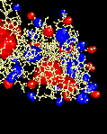
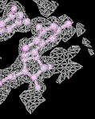
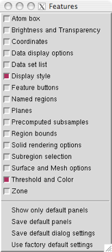

(surface)
(mesh)
(solid)
Volume Viewer is a tool for visualizing volume data, 3D numerical data sets such as electron density maps. The data can be shown as solid or mesh isosurfaces (contour surfaces) or as partially transparent solids:
|  |  |
|
|
electrostatic potential
(surface) |
electron density map
(mesh) |
electrostatic potential
(solid) |
The state of Volume Viewer is included in saved sessions. Many of its features are also implemented as the command volume, and several related tools can be accessed from the Volume Viewer Tools menu.
See also: vop, mask, molmap, Keyboard Shortcuts, IMOD files, the Density Display image tutorial, and on the Chimera Web site, the Image Gallery and Guide to Volume Display
Volume Viewer and some associated tools are described in:
Visualizing density maps with UCSF Chimera. Goddard TD, Huang CC, Ferrin TE. J Struct Biol. 2007 Jan;157(1):281-7.Volume Viewer is under development, and some limitations may be addressed in future versions.
There are several ways to start Volume Viewer, a tool in the Volume Data category. Starting Volume Viewer without a data file opens an "empty" interface. Choosing File... Open map from the interface will then bring up a dialog for opening any of the registered volume data types, including electrostatic potential. Alternatively, simply opening a file of volume data (other than electrostatic potential) will automatically start Volume Viewer. Additional file types can be defined. See also: fetching EDS files
| Volume Viewer (default Features) |
|---|
 |
Data are read when needed for display or a calculation, usually right when a file is opened. However, if only a subsample is shown initially, only those values are read, and if there is no display, only the file header is read. During loading of a large data set, the Chimera status line reports progress and allows the read to be canceled.
By default, volume data other than electrostatic potential will be displayed automatically if it does not exceed a certain size (see Show data when opened... in the Data display options). Otherwise, a data set can be displayed by clicking the eye icon to the right of the step menu. In the figure, no histogram is shown for default.phi because the data has not been read. Clicking its eye icon will trigger reading and then displaying the data.
Data sets can be opened, closed (deleted), duplicated, and saved using the Volume Viewer File menu. Multiple data sets can be open at the same time and more than one subregion or subsample from the same or different sets can be displayed.
Settings in Volume Viewer refer to the currently active data set, or current set. The name of the current set is highlighted; clicking a data set's name, dimensions, or histogram makes it the current set, as does choosing its name from the Data menu or Data set list. The current display region may correspond to part (a subregion) or all of the current set.
A Priism or NetCDF file may contain more than one 3D array of values (more than one component), for example corresponding to the different wavelengths used to image a specimen. When multicomponent data is read, each component is treated as if it were a separate data set.
Volume Viewer includes many features, and it is not practical to show them all at once. The basic dialog includes menus across the top (File, Features, Data, and Tools) and buttons across the bottom.
The File menu includes operations associated with data files:
Choosing a data set from the Data menu makes it the current set.
The Tools menu provides access to several related tools:
| Features menu (factory defaults) |
|---|
|  |
The Features menu lists potential sections in the
Volume Viewer dialog, with checkboxes controlling which
sections are shown.
Clicking the adjacent checkbox expands the Volume Viewer
interface to show the corresponding section.
A section can be closed by
unchecking its entry in the Features menu,
unchecking its feature button, or
clicking its close button ( ), if present.
), if present.
The figure shows the torn-off Features menu with factory default settings.
This section contains a row of small, unlabeled buttons representing the other possible sections of the Volume Viewer dialog. Checking a feature button has the same effect as checking a box in the Features menu. Although arranged horizontally, the buttons are in the same order as the menu entries. Placing the cursor over a feature button shows its section name.
← CoordinatesValues in the Coordinates section are used to convert between the grid indices of the current set and Cartesian coordinates. They are included in the header when a data set is saved to a file. The values can be edited; changes take effect when the Enter (return) key is pressed. Origin index refers to the grid indices of the XYZ origin; center moves the XYZ origin to the center of the grid. Fractional and negative values are allowed, as the origin is not required to coincide with a grid point or even to fall within the grid. Voxel size refers to the data point spacing (resolution). Although only one number will be shown if the size is the same along the three axes, three different numbers separated by spaces can be entered. A negative size along one axis can be used to flip the handedness of the map. After any changes, the origin index and voxel size can be reset to their initial values. Cell angles are the angles in degrees between the crystallographic axes. The Rotation axis and angle describe a transformation. When a data set is created by resampling (see Subregion selection), these fields show its transformation relative to the original data set.
← Data set listClicking the name of a data set in the Data Sets list makes it the current set.
DISPLAY |
← Display style
The Style or rendering mode to use for the current set can be surface, mesh, or solid. The surface and mesh modes depict isosurfaces (contour surfaces) consisting of a large collection of triangles. In the surface mode, each triangle is drawn as a plane of color. In the mesh mode, just the triangle edges are displayed. In the solid mode, the data is shown as a semitransparent solid.
← Threshold and Color
 |
The name of the current set is highlighted. Clicking the name, dimensions, or histogram of a data set makes it the current set, as does choosing a different step setting or turning on its display.
The step setting controls sampling density; a value of 1 means all the data points are used to generate the display, while 2 means every other data point is taken along each axis, reducing the number of points used by a factor of eight. Step sizes can be different in the X, Y, and Z directions, in which case three numbers are shown. Different step sizes can be entered in the Region bounds section, also shown in the figure. Changing a step value will change the data size limit for automatic step adjustment (see Adjust step... in the Data display options).
Histogram bar heights are on a logarithmic scale. The Range of values in the current set and its threshold controls are shown below all of the histograms. Thresholds control how data values are mapped to the display:
← Data display optionsShow outline box using color [color well] linewidth (1 by default) shows the bounding box of the current display region using the specified color and linewidth. The color can be changed by clicking the color well. Outline box display is off by default.
Maximum number of histograms shown (3 by default) sets how many data set histograms can be shown in the Threshold and Color section. The current set is always included, and specifying a data set for which the histogram is not shown as the current set will "bump" one of the others out of the section.
Initial colors [a series of color wells] are the colors to be used for successively opened sets of data. Clicking a color well allows the color to be changed.
Update display automatically (on by default) causes automatic display updates upon changes in rendering mode, Threshold and Color settings, or rendering options (Surface and Mesh options, Solid rendering options). Otherwise, it is necessary to click the eye icon to update the display after such changes. This option does not apply to display after:
Show data when opened if smaller than [size] Mvoxels (on by default, with size=256) enables automatic initial display of data sets smaller than a specified size. (Regardless of this setting, however, electrostatic potential is not displayed initially.) The default limit of 256 Mvoxels is equivalent to a 512 x 512 x 1024 data set. Size does not have to be an integer; for example, 0.25 could be used. When the option is on, a newly opened data set that exceeds the size limit will not be displayed until its eye icon is clicked. When the option is off, the icon must always be clicked to generate an initial display. Turning the option on or off or changing the size will not affect the display of any data that has already been opened. If a precomputed subsample is being read, the size is compared to that of the subsampled data.
Show plane when data larger than [size] Mvoxels (on by default, with size=256) specifies that a single plane normal to the Z axis should be displayed when a newly opened data set exceeds the specified size. (See also Planes.)
Adjust step to show at most [size] Mvoxels (on by default, with size=1) allows limiting the display to a reasonable amount of data. Different values of size can be used for different data sets. The default limit of 1 Mvoxel (220 or 1,048,576 voxels) is equivalent to a 128 x 128 x 64 data set. Size does not have to be an integer; for example, 0.25 could be used. When this option is on, step is automatically adjusted by powers of 2 to comply with the Mvoxel limit (increased when the extents are increased, if necessary, and decreased when the overall region size is small enough for finer sampling). Changing a step value in the Threshold and Color section or the Region bounds section will change the Mvoxel size limit to what is then shown.
Data cache size (Mb) (512 by default) controls whether volume data is kept in memory when it is not being displayed. A cache can improve performance, since accessing data in the cache is faster than reading it from disk. It is necessary to press Enter (return) after changing the cache size. Undisplayed data is purged from the cache to maintain the size, but if the displayed data alone requires more space, it will not be purged. The least recently displayed data is purged. The data cache only accounts for part of the memory used by Volume Viewer. Because a significant amount of additional memory is occupied by surfaces and color arrays used in rendering, the cache size should be set to about 1/3 or 1/2 of the desired total memory usage by Volume Viewer. Clicking Current use opens a dialog showing how much memory is occupied by volume data (not including the surfaces, etc. mentioned above).
Zoom and center camera when region changes (off by default) automatically readjusts the view when the bounds of the current display region change.
← Brightness and TransparencyBrightness scales the intensity of the color of the volume display. Values range from 0.01 to 10, where 1 (the default) produces no change relative to the color defined in the Threshold and Color section.
For surface and mesh displays: the Transparency is the fraction of light transmitted from behind the surface or a line of mesh. Values range from 0 to 1, where 0 (the default) corresponds to no transparency. (See also Dim transparent surface/mesh in the Surface and Mesh options.)
For solid displays: the Transparency setting modulates transparency values from the histogram in a way that compensates for the thickness of the display (details). Values range from 0 to 1, default 0.5. By default, more transparent voxels are made dimmer (Dim transparent voxels in the Solid rendering options).
SURFACE OR MESH DISPLAY |
For surface and mesh displays, each threshold is shown as a vertical bar. Initial thresholds are set automatically. For unsigned data types, an initial threshold is set so that 1% of voxels (1% of the volume encompassed by the data region) lie above it; for signed data types, positive and negative thresholds are placed symmetrically about zero.
In the figure, the histogram of the current set is on top. The Range of values in the current set and its threshold controls are shown below both of the histograms.
Any number of thresholds (contour levels) can be added by Ctrl-clicking with the left mouse button on the histogram. Ctrl-clicking on an existing threshold deletes it. Of course, different thresholds can have different settings for Level and Color; the settings shown apply to the threshold most recently moved or clicked, the current threshold. A threshold can be moved by changing the Level and then pressing Enter (return) or by dragging it horizontally with the left mouse button. Holding the Shift key down reduces the speed (mouse sensitivity) of threshold dragging tenfold, allowing finer control. Setting a contour level very low can generate a surface with many triangles that takes a long time to display.
Each threshold is shown in the same color as its display. The Color can be changed by clicking the color well. Brightness and Transparency can be adjusted.
← Surface and Mesh optionsSurface smoothing iterations [i] factor [f] (off by default, with i=2 and f=0.3) smooths surface and mesh displays by moving each vertex toward the average position of its neighboring vertices (those connected by triangle edges). A vertex is moved a fraction f (ranging from 0 to 1) of the way toward the average position of its neighbors, and each vertex is moved once per iteration. i iterations are performed, where i is a positive integer. When Subdivide surface... is on, it may be necessary to use more smoothing iterations and/or a higher factor to achieve a smoothness similar to that of the unsubdivided surface.
Subdivide surface [j] times (off by default, with j=1) increases the number of triangles used in surface and mesh displays. Subdivision can help to produce smoother surfaces when combined with the Surface smoothing... option. During a single round of subdivision, each triangle is divided into four smaller triangles by connecting the midpoints of the triangle edges. Thus, the number of triangles is increased by a factor of 4j, where j is a positive integer.
Smooth mesh lines (off by default) turns on anti-aliasing to smooth lines in mesh displays. Mesh lines with transparency > 0 can only be smoothed when Dim transparent surface/mesh is on. OpenGL can render smooth lines using anti-aliasing, but the method has a side effect: dense meshes look brighter from some viewpoints and darker from others, depending on the order in which the lines were drawn.
Square mesh (on by default) displays a subset of the lines in the triangular mesh. Lines in the square mesh show the intersection of the XY, YZ, and XZ grid planes with the contour surface. Regardless of this setting, triangles will still be drawn in the planar surfaces at box faces shown with the Cap high values... option.
Mesh line thickness [k] pixels (k=1 by default) is the pixel line width used in mesh displays; it must be a positive integer.
Dim transparent surface/mesh (on by default) decreases the brightness of surface and mesh displays as their Transparency is increased. Specular highlights are also dimmed. Otherwise, increasing the transparency of a color (without changing its brightness) allows more light to shine through, resulting in an increase in the overall brightness. When dimming is on, OpenGL (alpha,1–alpha) blending is used instead of (1,1–alpha) blending.
One transparent layer (off by default) simplifies a transparent surface or mesh display to only its topmost layer; otherwise, additional layers will be drawn, emphasizing any surface convolutions.
Mesh lighting (on by default) makes the inside of a contour volume shown in the mesh rendering mode dimmer than the outside. With mesh lighting on, the brightness varies according to the angle between each surface point normal and the line of sight; brightness is maximal when the outward-facing normal is parallel to the line of sight and pointing at the user (see more on the definition of "outward" under Light flip side...). With mesh lighting off, the brightness is uniform regardless of the angle between the normal and the line of sight.
Two-sided surface lighting (on by default) makes both the inside and outside of a contour volume shown in the surface rendering mode bright. Otherwise, only the outside is lit (see more on the definition of "outside" under Light flip side...). The brightness of each lit side varies according to the angle between a surface point normal and the line of sight; brightness is maximal when the normal is parallel to the line of sight.
Light flip side for thresholds < 0 affects surface and mesh displays. The surface mode is affected only when lit from a single side (when Two-sided surface lighting is off). The mesh mode is affected only when Mesh lighting is on. When Light flip side... is off, the side toward smaller or more negative data values is always treated as the outside of a contour volume. When Light flip side... is on, the side toward larger or more positive values is treated as the outside for any negative thresholds (contour levels), while the side toward smaller or more negative values is treated as the outside for any positive thresholds. Flip side lighting is appropriate when displaying data for which the sign is meaningful, such as electrostatic potential. In other cases, the data set is better described as a monotonic range of values, and where it lies relative to zero is not meaningful.
Cap high values at box faces makes isosurfaces (surface and mesh displays) cover faces of the volume data box where high values would be exposed. This option should be turned off when the objects of interest are represented by lower or more negative data values. The default setting depends on volume data type: on for most formats, off for formats that are commonly inverted (Purdue image format) or used for signed data (electrostatic potential, molecular orbitals).
SOLID DISPLAY |
For solid displays, each threshold is shown as a small square. Initial thresholds are set automatically. For unsigned data types, initial thresholds are set to give zero intensity for the 10% of voxels (in the data region) with the lowest values, scaling up to 0.99 intensity for the 1% of voxels with the highest values; for signed data types, positive and negative thresholds are placed symmetrically about zero.
The figure shows three components of light microscope data. The Range of values in the current set and its threshold controls are shown below all of the histograms.
Any number of thresholds can be added by Ctrl-clicking with the left mouse button on the histogram. Ctrl-clicking on an existing threshold deletes it. Of course, different thresholds can have different settings for Level and Color; the settings shown apply to the threshold most recently moved or clicked, the current threshold. A threshold can be moved by changing the Level and then pressing Enter (return) or by dragging it horizontally and/or vertically with the left mouse button. Holding the Shift key down reduces the speed (mouse sensitivity) of threshold dragging tenfold, allowing finer control. The rightmost threshold does not have to be at the far right of the histogram, and a threshold at a lower data value can be higher (vertically) than a threshold at a higher data value.
Each threshold is shown in the same color as its display. Different thresholds for the same data set can be colored alike (as in the figure) or differently. The Color can be changed by clicking the color well. Brightness and Transparency can be adjusted.
The thresholds and connecting lines on each histogram define a transfer function that maps data values to colors and intensities. For each voxel, the data value is compared to the thresholds on the histogram. The colors and intensities of the closest threshold at a lower data value (to the left) and the closest threshold at a higher data value (to the right) are linearly interpolated. Voxels with data values greater than the rightmost threshold or less than the leftmost threshold are colorless and completely transparent. Color is defined by red, green, blue and opacity components. The intensity at a threshold is further scaled by its vertical position, where 0 is the bottom of the histogram and 1 is the top. Rendering time does not depend on the positions of the thresholds, but increases with greater numbers of thresholds.
← Solid rendering optionsColor mode refers to color pixel format (OpenGL texture format). Memory usage can be tailored, potentially to allow faster updates and display of larger maps.
Projection mode allows memory-efficient display of large data sets such as tomograms. Displaying just the planes perpendicular to one data axis uses one-third the memory of the x, y or z planes option, which displays the planes along the data axis most perpendicular to the screen at a given data orientation. The perpendicular to view option uses planes that may not be aligned with any data axis (3D texture mapping). If this option is chosen but not supported by the computer hardware, an empty red outline box will be shown; if it is supported but the texture is too large, an empty yellow outline box will be shown.
Maximum intensity projection (off by default) shows, at each pixel, the the most intense color value underlying the pixel along the line of sight. The maximum intensities of the red, green, and blue color components are determined separately. Transparency is not used; that is, the Transparency and the vertical positions of the thresholds are ignored when this setting is on. Maximum intensity projection can be useful for enhancing detail. Unphysical effects can result, but are usually not very noticeable; examples include the disappearance of a dim spot when it passes in front of a brighter spot and the simulation of a single spot when the maximal values of different color components under the same pixel actually come from different spots.
Dim transparent voxels (on by default) scales voxel brightness in solid displays by a factor of (1–transparency). Otherwise, increasing the transparency also makes a volume appear brighter, because less light is blocked.
Solid brightness correction (off by default) Without this correction, the apparent brightness and transparency of solid displays (in projection modes other than perpendicular to view) depend on the viewing angle relative to the XYZ data axes. For a cube-shaped volume with equal resolution in the X, Y, and Z dimensions, the brightness drops and the transparency increases by a factor of 31/2 (approximately 1.7) as the viewing angle is changed from along any axis to along the cube diagonal. The brightness correction remedies this, but doubles rendering time.
Minimize texture memory use (off by default) causes solid displays (in projection modes other than perpendicular to view) to reuse a single 2D texture instead of allocating separate textures for every plane of the data volume. This is useful for viewing large data sets that would otherwise fail to display, but it can degrade performance (increase the lag time) when the display is rotated and during remote display.
Solid linear interpolation (on by default) refers to linear interpolation of the brightness and transparency between voxels in solid displays. Turning interpolation off may yield a pixelated appearance, but may decrease the rendering time, depending on the graphics hardware.
The default settings will often suffice for displaying the data without performance problems. If there are problems, however, the first issue to address is the size of the data set: whether the information can be handled and displayed in a reasonable amount of time. Typically, an isosurface for a 64 x 64 x 64 data set can be displayed in a few seconds on a late-1990's machine. The Chimera Web site includes a benchmark table listing the volume data sizes that can be handled at 10 frames per second on various computer systems. With solid displays, performance is optimal when region dimensions are powers of two. A status line near the bottom of the panel reports on the progress of a calculation. Some experimentation may be required to balance appearance and performance for a given data set. The size of a 3D data set is essentially the total number of values, X x Y x Z. It is related to both the physical dimensions (for example, Å along each axis) and the resolution (spacing) between data points.
To decrease size, one can focus on a smaller physical region (subregion) and/or use a sparser grid of points (subsample) from the original data set. Step values > 1 indicate subsampling. Subsamples can be precomputed.
File... Duplicate makes a copy of the current set so that it is not necessary to open the same file multiple times to simultaneously display different subregions or representations of the same data.
← Region boundsThe physical extents of the displayed data can be decreased by increasing the min grid indices and/or decreasing the max grid indices. The step values control the level of sampling; for example, a step of 2 means that every other grid point is used to calculate the display. Because they refer to grid indices, the min, max, and step values must be integers. Pressing Enter (return) after entering new values or clicking the eye icon will update the display. Changing a step value will change the data size limit for automatic step adjustment (Adjust step... in the Data display options). The original full data set can be restored by changing the min, max, and step values back to their original settings or by clicking Full in the Subregion selection section. Clicking Full Plane in the Planes section restores the full extents normal to the plane axis.
← Subregion selectionSelect subregions using [button] allows subregions of the current set to be defined with the mouse. The indicated mouse button (which can be changed using the pulldown menu) is reassigned from its existing function to volume selection in the graphics window.
In the following description of selection boxes, "clicking" and "dragging" refer to operations with whichever mouse button has been assigned to subregion selection. When there is no pre-existing selection box:
The auto display option (off by default) automatically updates the current display region after the subregion selection box is changed. Otherwise, it is necessary to click Crop to apply the new boundaries. Clicking Full restores the original extents of the data set.
Rotate selection box deactivates other models so that only the selection box is rotated by the mouse. After box reorientation, clicking Resample interpolates from the data to generate a new set of data bounded by the box, with points spaced according to the Resampling voxel size. Resampling (interpolation) is required to generate values along axes that differ from the original data axes; a voxel size no larger than that of the original set (see Coordinates) is recommended to limit loss of resolution.
After various subregions of the current set have been used as the current display region during a session, it is possible to go Back and Forward among them. The subregion farthest Back is the earliest created within the session. Up to 32 subregions can be stored and traversed. Changes in min and max values but not step sizes (in Region bounds) are retained in this history. Note that resampling creates a separate data set with its own history; the resampled data set is not included in the history of the set from which it was derived.
← Named regionsSubregions can be named and then restored by name. Add adds the name entered in the name field to the list of named regions, Delete deletes the region with the name shown in the name field from the list of named regions, and Show allows restoration (from a pulldown menu) of any of the named regions on the list. When Add is clicked, the min and max values (see Region bounds) of the current display region are saved. A named region can be restored by typing its name in the Named region field and pressing Enter (return).
← ZoneClicking Zone limits the display to areas within a specified distance (Radius) of the currently selected atoms, if any (works for surface and mesh but not solid displays; see limitations). The current display region is actually larger than the zone, but areas outside the zone are masked. By default, a zone is based only on distances to any selected atoms (and Volume Tracer markers); the bondzone command indicates that points along any selected bonds (and Volume Tracer links) should also be used.
The Radius can be adjusted by moving the slider or by typing in a new value. Values larger than what is attainable by moving the slider all the way to the right can be typed. When zoning is in effect, recontouring affects only the block of data enclosing the zone (the current display region) rather than the entire current set of data. If the set of selected atoms is changed, Zone must be clicked again to move the zone accordingly. Otherwise, the zone will remain centered on the formerly selected atoms. Clicking Zone will not update the display when no atoms are selected. Multiple isosurfaces of a given data set will be zoned simultaneously. However, the data set can be duplicated to allow differential zoning of different isosurfaces. No Zone turns off zoning and restores the original extents of the data. Zoning should be turned off during the use of Subregion selection buttons. (See also Atom box.)
← Atom boxClicking the Box around selected atoms... button limits the current display region to a box with X,Y,Z dimensions enclosing the currently selected atoms, if any. The padding value increases the box size in every direction from the minimum needed to enclose the atoms. (See also Zone.)
← Precomputed subsamplesPrecomputed subsamples are especially useful when the data set is large; they facilitate switching between larger regions at low resolution and smaller regions at high resolution. Precomputed subsample files decrease memory usage and time spent reading data. After a data file is opened, its contents are not read into memory until the data is displayed (by clicking the eye icon, or automatically as specified with Show data when opened... in the Data display options). If step sizes are set greater than 1 before the data is displayed, only a smaller precomputed subsample (if the appropriate one is available) will be read into memory. Subsamples of the original data can be created with the program downsize.py. Besides the more efficient use of memory, another reason to use precomputed subsamplings instead of generating them on the fly is that downsize.py offers a variety of methods for determining the subsample values. The subsample files must be associated with the correct full data file when they are opened. This is done by opening the full data file, making sure it is the current set, and then using the Open... button in the Precomputed subsamples section to open the subsample files. Along with the full data, the subsamples are listed in the pulldown Precomputed subsamplings menu according to the step sizes inferred to have been used to generate them from the full data file. When the eye icon is clicked, the appropriate subsample (based on step values) is used.
It is also possible to open and work with precomputed subsample files in the "normal" way (without associating them with the full data file). However, this does not allow for easy switching among different subsamples of the same full data set.
 |
The Planes section allows display of a slab of the data, Depth planes thick and normal to the specified axis (default Z axis). The Plane value is the grid index of the first displayed plane along the axis. (See also Show plane... in the Data display options.)
Clicking One displays a single plane of data and switches the display style to solid. The other styles can still be used, however, to show 2D contours. Slab thickness can be changed by editing the Depth value, and the location of the slab along the axis can be changed by editing the Plane value or by moving the slider. Only planes that are multiples of the step size will be shown, and Depth refers to the number of planes shown rather than a grid index range. Clicking All shows the full thickness of the data along the axis, whereas clicking Full Plane restores the full extents of the slab normal to the axis (when a subregion had been shown).
Cycle through [N] planes at speed [M] slides the Plane display back and forth along the specified axis over a grid index range of N (default 20) centered at the starting Plane value, at a rate of up to M frames per second (default 30). The rate may be slower as limited by the system. Clicking Preload loads data into memory beforehand to allow faster cycling through different planes. Since N is a grid index range, the cycle will include fewer than N different displays when the step size is greater than 1. Turning on Cycle when the Depth is 1 switches the display style to solid.
Single planes of data can be shown as contour lines or spots. Using the surface or mesh style and turning off Cap high values at box faces shows contour lines of the specified width, whereas using the surface style with capping on shows filled spots.
Values in a single plane of data can be plotted as surface heights with the command topography.
A new file format can be added using Python code. The code must read the desired file type into a NumPy Python array and specify how to map data indices into Chimera XYZ positions by giving an XYZ origin (position for index 0,0,0) and XYZ step size (spacing between grid points). In the chimera/share/VolumeData directory, look at griddata.py to see the base class for volume data; this file contains useful comments. The base class defines the interface to the volume data used by Volume Viewer. For an example file reader, look at xplor_format.py and xplor_grid.py in the xplor directory. For multiple-component data (i.e., data with more than one value at each grid point), look at priism_format.py and priism_grid.py in the priism directory. The *_format.py file is the file reader, and *_grid.py wraps the data in a grid object suitable for use by Volume Viewer. The last step is to add an entry to the list of known file types in fileformats.py.
Zoning does not work for solid displays. Restricting the display with Zone works in the surface and mesh modes, but not in the solid mode.
Superimposing transparent models. A superposition of two models with transparency will not be shown correctly. The models will be rendered separately, and the one rendered second will not take account of the opacity of the first model. A superposition of one transparent model with one or more opaque models will be displayed correctly, however.
Data size limit for surface calculations. Contour surfaces cannot be calculated for volume data sets with more than 232 voxels (4 Gvoxel) because 32-bit integer variables are used to index the volume data values. This limit applies even to 64-bit machines.
Transfer function limitations. The conversion of data values to intensities (which occurs in the solid mode) only allows linear interpolation.
Transparent solid edge voxels. Solid displays are missing a half-voxel on all sides. This is due to problems in OpenGL with linear interpolation near the boundary of a texture.
Slow remote display. Remote display is particularly slow with transparent surface and mesh displays, since the whole surface must be sent to the displaying machine every time the orientation is changed. The solid mode does not require every change in orientation to be transmitted, but remote display is still significantly slower than direct display.
Solid transparency details. For solid displays, the transfer function maps a voxel's data value to a vertical position (ranging from 0 to 1) on the histogram:
Thisto = (1 – vertical position)If the Transparency setting is zero (Tset = 0), the voxel will be completely opaque:
Tfinal = 0Otherwise, the transparency value from the histogram is modulated by Tset in a way that depends on the number of data planes displayed:
Tfinal = Thisto(Thisto* Tset* thickness) –1where Nx, Ny, and Nz are the number of X, Y, and Z data planes displayed, respectively. Increasing the Transparency setting and/or the thickness of the displayed data will make the exponent smaller and (because Thisto ≤ 1) individual voxels more transparent.
thickness = min(Nx,Ny,Nz)
Electrostatic potential file types. DelPhi and GRASP *.phi files are both accepted as input; the file reader automatically recognizes the phi file type and reads the data accordingly.
Output MRC files. MRC files written out with File... Save map as are in the MRC 2000 format. Older MRC-reading programs or programs expecting CCP4 format will read such files successfully but may not align the data correctly with other data sets.
Byte order. Different computers store the bytes of a single numeric value in different orders. PowerPC processors use one order (called big-endian), while Intel/AMD x86 family processors use the opposite order (called little-endian). If a binary data file is created on one machine and read on another having the opposite byte order, byte-swapping is required to get the correct numeric values. The DSN6 file reader assumes that the file was written in big-endian byte order. DSN6 files can be read on big- or little-endian machines. All of the other file readers detect file byte order and machine byte order, then perform byte-swapping if necessary.
Rendering code. Surface and mesh displays are of class SurfaceModel, implemented in the Chimera _surface module; solid displays are of class Volume_Model, implemented in the Chimera _volume module.
Memory usage varies by file type. For the DSN6, Delphi, and XPLOR formats, the whole file is read in order to extract a subregion; thus, specifying a subregion will speed up rendering and display but will not conserve memory. By contrast, only the specified subregions are read from MRC, NetCDF, and Priism files.